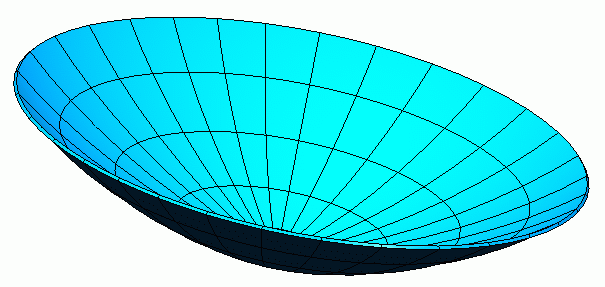

Finite Element Generation,
Modal Analysis, and Optimization of the Reflector Dish
Geometry Manipulation, Change
(and update) and Initial Solution
| The analysis of the Reflector Dish was intended to determine the structural
stability of a dish provided by a supplier, who had built the geometry
in another CAD package and exported an orphaned solid for us to use in
our assembly and for our analysis. |

|
 |
We needed to add geometry to simulate the rib thickness on the back
of the reflector. We then added interior surfaces with partitions
to model the ribs. |
| We meshed the Reflector and the Ribs with thin shell elements of varying
thickness and materials. We used a variety of automatic meshing techniques. |
|
 |
We solved the model for the first 6 normal modes. The frequencies
were 29.642 Hz, 34.5298 Hz, 42.037 Hz, 45.9204 Hz, 59.3679
Hz, 69.9236 Hz. |
|
|